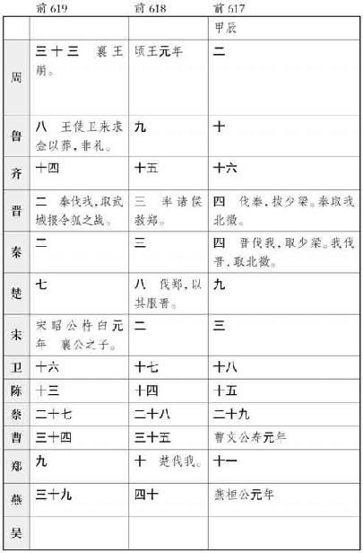
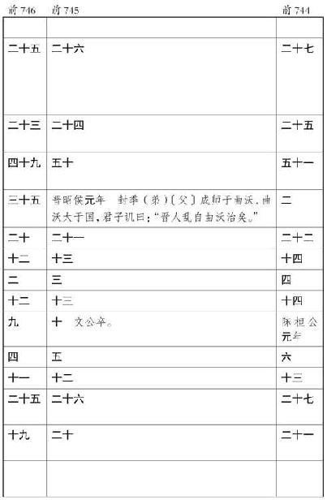

史记卷四十七
孔子世家第十七
孔子 生鲁昌平乡陬邑 。其先宋 人也，曰孔防叔 。防叔 生伯夏 ，伯夏 生叔梁纥 。纥 与颜氏 女野合而生孔子 ，祷于尼丘 得孔子 。鲁襄公 二十二年而孔子 生。生而首上圩顶，故因名曰丘 云。字仲尼 ，姓孔氏 。
丘 生而叔梁纥 死，葬于防山 。防山 在鲁 东，由是孔子 疑其父墓处，母讳之也。孔子 为儿嬉戏，常陈俎豆，设礼容。孔子 母死，乃殡五父之衢 ，盖其慎也。陬人輓父 之母诲孔子 父墓，然后往合葬于防 焉。
孔子 要绖，季氏 飨士，孔子 与往。阳虎 绌曰：“季氏 飨士，非敢飨子也。”孔子 由是退。
孔子
年十七，鲁
大夫孟釐子
病且死，诫其嗣懿子
曰：“孔丘
，圣人之后，灭于宋
。其祖弗父何
始有宋
而嗣让厉公
。及正考父
佐戴
、武
、宣公
，三命兹益恭，故鼎铭云：‘一命而偻，再命而伛，三命而俯，循墙而走，亦莫敢余侮。
于是，粥于是，以 余口。’其恭如是。吾闻圣人之后，虽不当世，必有达者。今孔丘
年少好礼，其达者欤？吾即没，若必师之。”及釐子
卒，懿子
与鲁
人南宫敬叔
往学礼焉。是岁，季武子
卒，平子
代立。
余口。’其恭如是。吾闻圣人之后，虽不当世，必有达者。今孔丘
年少好礼，其达者欤？吾即没，若必师之。”及釐子
卒，懿子
与鲁
人南宫敬叔
往学礼焉。是岁，季武子
卒，平子
代立。
孔子 贫且贱。及长，尝为季氏 史，料量平；尝为司职吏而畜蕃息。由是为司空。已而去鲁 ，斥乎齐 ，逐乎宋 、卫 ，困于陈蔡 之间，于是反鲁 。孔子 长九尺有六寸，人皆谓之“长人”而异之。鲁 复善待，由是反鲁 。
鲁南宫敬叔 言鲁 君曰：“请与孔子 适周 。”鲁 君与之一乘车，两马，一竖子俱，适周 问礼，盖见老子云 。辞去，而老子 送之曰：“吾闻富贵者送人以财，仁人者送人以言。吾不能富贵，窃仁人之号，送子以言，曰：‘聪明深察而近于死者，好议人者也。博辩广大危其身者，发人之恶者也。为人子者毋以有己，为人臣者毋以有己。’”孔子 自周 反于鲁 ，弟子稍益进焉。
是时也，晋平公 淫，六卿擅权，东伐诸侯；楚灵王 兵强，陵轹中国；齐 大而近于鲁 。鲁 小弱，附于楚 则晋 怒；附于晋 则楚 来伐；不备于齐 ，齐 师侵 鲁 。
鲁昭公
之二十年，而孔子
盖年三十矣。齐景公
与晏婴
来适鲁
，景公
问孔子
曰：“昔秦穆公
国小处辟，其霸何也？”对曰：“秦
，国虽小，其志大；处虽辟，行中正。身举五羖
，爵之大夫，起累绁之中，与语三日，授之以政。以此取之，虽王可也，其霸小矣。”景公
说。
孔子 年三十五，而季平子 与郈昭伯 以斗鸡故得罪鲁昭公 ，昭公 率师击平子 ，平子 与孟氏 、叔孙氏 三家共攻昭公 ，昭公 师败，奔于齐 ，齐 处昭公乾侯 。其后顷之，鲁 乱。孔子 适齐 ，为高昭子 家臣，欲以通乎景公 。与齐 太师语乐，闻韶 音，学之，三月不知肉味，齐 人称之。
景公
问政孔子
，孔子
曰：“君君，臣臣，父父，子子。”景公
曰：“善哉！信如君不君，臣不臣，父不父，子不子，虽有粟，吾岂得而食诸！”他日又复问政于孔子
，孔子
曰：“政在节财。”景公
说，将欲以尼谿
田封孔子
。晏婴
进曰：“夫儒者滑稽而不可轨法；倨傲自顺，不可以为下；崇丧遂哀，破产厚葬，不可以为俗；游说乞贷，不可以为国。自大贤之息，周室
既衰，礼乐缺有间。今孔子
盛容饰，繁登降之礼，趋详之节，累世不能殚其学，当年不能究其礼。君欲用之以移齐
俗，非所以先细民也。”后，景公
敬见孔子
，不问其礼。异日，景公
止孔子
曰：“奉子以季氏
，吾不能。”以季孟
之间待之。齐
大夫欲害孔子
，孔子
闻之。景公
曰：“吾老矣，弗能用也。”孔子
遂行，反乎鲁
。
孔子 年四十二，鲁昭公 卒于乾侯 ，定公 立。定公 立五年，夏，季平子 卒，桓子 嗣立。季桓子 穿井得土缶，中若羊，问仲尼 云“得狗”。仲尼 曰：“以丘 所闻，羊也。丘 闻之，木石之怪夔、罔阆，水之怪龙、罔象，土之怪坟羊。”
吴 伐越 ，堕会稽 ，得骨节专车。吴 使使问仲尼 ：“骨何者最大？”仲尼 曰：“禹 致群神于会稽山 ，防风氏 后至，禹 杀而戮之，其节专车，此为大矣。”吴 客曰：“谁为神？”仲尼 曰：“山川之神足以纲纪天下，其守为神，社稷为公侯，皆属于王者。”客曰：“防风 何守？”仲尼 曰：“汪罔氏 之君守封 、禺 之山，为釐姓 。在虞 、夏 、商 为汪罔 ，于周 为长翟 ，今谓之大人。”客曰：“人长几何？”仲尼 曰：“僬侥氏 三尺，短之至也。长者不过十之，数之极也。”于是吴 客曰：“善哉圣人！”
桓子
嬖臣曰仲梁怀
，与阳虎
有隙。阳虎
欲逐怀
，公山不狃
止之。其秋，怀
益骄，阳虎
执怀
。桓子
怒，阳虎
因囚桓子
，与盟而 之。阳虎
由此益轻季氏
。季氏
亦僭于公室，陪臣执国政，是以鲁
自大夫以下皆僭离于正道。故孔子
不仕，退而修诗书礼乐，弟子弥众，至自远方，莫不受业焉。
之。阳虎
由此益轻季氏
。季氏
亦僭于公室，陪臣执国政，是以鲁
自大夫以下皆僭离于正道。故孔子
不仕，退而修诗书礼乐，弟子弥众，至自远方，莫不受业焉。
定公 八年，公山不狃 不得意于季氏 ，因阳虎 为乱，欲废三桓 之適，更立其庶孽阳虎 素所善者，遂执季桓子 。桓子 诈之，得脱。定公 九年，阳虎 不胜，奔于齐 。是时孔子 年五十。
公山不狃 以费 畔季氏 ，使人召孔子 。孔子 循道弥久，温温无所试，莫能己用，曰：“盖周文武 起丰镐 而王，今费 虽小，傥庶几乎！”欲往。子路 不说，止孔子 。孔子 曰：“夫召我者岂徒哉？如用我，其为东周 乎！”然亦卒不行。
其后定公
以孔子
为中都
宰，一年，四方皆则之。由中都
宰为司空，由司空为大司寇。
定公
十年春，及齐
平。夏，齐
大夫黎 言于景公
曰：“鲁
用孔丘
，其势危齐
。”乃使使告鲁
为好会，会于夹谷
。鲁定公
且以乘车好往。孔子
摄相事，曰：“臣闻有文事者必有武备，有武事者必有文备。古者诸侯出疆，必具官以从。请具左右司马。”定公
曰：“诺。”具左右司马。会齐侯夹谷
，为坛位，土阶三等，以会遇之礼相见，揖让而登。献酬之礼毕，齐
有司趋而进曰：“请奏四方之乐。”景公
曰：“诺。”于是旖旄羽祓矛戟剑拨鼓噪而至。孔子
趋而进，历阶而登，不尽一等，举袂而言曰：“吾两君为好会，夷狄之乐何为于此！请命有司！”有司却之，不去，则左右视晏子
与景公
。景公
心怍，麾而去之。有顷，齐
有司趋而进曰：“请奏宫中之乐。”景公
曰：“诺。”优倡侏儒为戏而前。孔子
趋而进，历阶而登，不尽一等，曰：“匹夫而营惑诸侯者罪当诛！请命有司！”有司加法焉，手足异处。景公
惧而动，知义不若，归而大恐，告其群臣曰：“鲁
以君子之道辅其君，而子独以夷狄之道教寡人，使得罪于鲁君
，为之奈何？”有司进对曰：“君子有过则谢以质，小人有过则谢以文。君若悼之，则谢以质。”于是齐侯
乃归所侵鲁
之郓
、汶阳
、龟阴
之田以谢过。
言于景公
曰：“鲁
用孔丘
，其势危齐
。”乃使使告鲁
为好会，会于夹谷
。鲁定公
且以乘车好往。孔子
摄相事，曰：“臣闻有文事者必有武备，有武事者必有文备。古者诸侯出疆，必具官以从。请具左右司马。”定公
曰：“诺。”具左右司马。会齐侯夹谷
，为坛位，土阶三等，以会遇之礼相见，揖让而登。献酬之礼毕，齐
有司趋而进曰：“请奏四方之乐。”景公
曰：“诺。”于是旖旄羽祓矛戟剑拨鼓噪而至。孔子
趋而进，历阶而登，不尽一等，举袂而言曰：“吾两君为好会，夷狄之乐何为于此！请命有司！”有司却之，不去，则左右视晏子
与景公
。景公
心怍，麾而去之。有顷，齐
有司趋而进曰：“请奏宫中之乐。”景公
曰：“诺。”优倡侏儒为戏而前。孔子
趋而进，历阶而登，不尽一等，曰：“匹夫而营惑诸侯者罪当诛！请命有司！”有司加法焉，手足异处。景公
惧而动，知义不若，归而大恐，告其群臣曰：“鲁
以君子之道辅其君，而子独以夷狄之道教寡人，使得罪于鲁君
，为之奈何？”有司进对曰：“君子有过则谢以质，小人有过则谢以文。君若悼之，则谢以质。”于是齐侯
乃归所侵鲁
之郓
、汶阳
、龟阴
之田以谢过。
定公 十三年夏，孔子 言于定公 曰：“臣无藏甲，大夫毋百雉之城。”使仲田 为季氏 宰，将堕三都。于是叔孙氏 先堕郈 。季氏 将堕费 ，公山不狃 、叔孙辄 率费 人袭鲁 。公与三子入于季氏 之宫，登武子 之台。费 人攻之，弗克，入及公侧。孔子 命申句须 、乐颀 下伐之，费 人北。国人追之，败诸姑 蔑 。二子奔齐 ，遂堕费 。将堕成 ，公敛处父 谓孟孙 曰：“堕成 ，齐 人必至于北门。且成 ，孟氏 之保障，无成 是无孟氏 也。我将弗堕。”十二月，公围成 ，弗克。
定公 十四年，孔子 年五十六，由大司寇行摄相事，有喜色。门人曰：“闻君子祸至不惧，福至不喜。”孔子 曰：“有是言也。不曰‘乐其以贵下人’乎？”于是诛鲁 大夫乱政者少正卯 。与闻国政三月，粥羔豚者弗饰贾；男女行者别于途；途不拾遗；四方之客至乎邑者不求有司，皆予之以归。
齐
人闻而惧，曰：“孔子
为政必霸，霸则吾地近焉，我之为先并矣。盍致地焉？”黎
曰：“请先尝沮之；沮之而不可则致地，庸迟乎！”于是选齐
国中女子好者八十人，皆衣文衣而舞康乐
，文马三十驷，遗鲁
君。陈女乐文马于鲁
城南高门
外。季桓子
微服往观再三，将受，乃语鲁君
为周道游，往观终日，怠于政事。子路
曰：“夫子可以行矣。”孔子
曰：“鲁
今且郊，如致膰乎大夫，则吾犹可以止。”桓子
卒受齐
女乐，三日不听政；郊，又不致膰俎于大夫。孔子
遂行，宿乎屯
。而师己
送，曰：“夫子则非罪。”孔子
曰：“吾歌可夫？”歌曰：“彼妇之口，可以出走；彼妇之谒，可以死败。盖优哉游哉，维以卒岁！”师己
反，桓子
曰：“孔子
亦何言？”师己
以实告。桓子
喟然叹曰：“夫子罪我以群婢故也夫！”
孔子 遂适卫 ，主于子路 妻兄颜浊邹 家。卫灵公 问孔子 ：“居鲁 得禄几何？”对曰“奉粟六万。”卫 人亦致粟六万。居顷之，或谮孔子 于卫灵公 。灵公 使公孙余假 一出一入。孔子 恐获罪焉，居十月，去卫 。
将适陈
，过匡
，颜刻
为仆，以其策指之曰：“昔吾人此，由彼缺也。”匡
人闻之，以为鲁
之阳虎
。阳虎
尝暴匡
人，匡
人于是遂止孔子
。孔子
状类阳虎
，拘焉五日。颜渊
后，子曰：“吾以汝为死矣。”颜渊
曰：“子在，回
何敢死！”匡
人拘孔子
益急，弟子惧。孔子
曰：“文王
既没，文不在兹乎？天之将丧斯文也，后死者不得与于斯文也。天之未丧斯文也，匡
人其如予何！”孔子
使从者为宁武子
臣于卫
，然后得去。
去即过蒲 。月馀，反乎卫 ，主蘧伯玉 家。灵公 夫人有南子 者，使人谓孔子 曰：“四方之君子不辱欲与寡君为兄弟者，必见寡小君。寡小君愿见。”孔子 辞谢，不得已而见之。夫人在缔帷中。孔子 入门，北面稽首。夫人自帷中再拜，环佩玉声璆然。孔子 曰：“吾乡为弗见，见之礼答焉。”子路 不说。孔子 矢之曰：“予所不者，天厌之！天厌之！”居卫 月馀，灵公 与夫人 同车，宦者雍渠 参乘，出，使孔子 为次乘，招摇市过之。孔子 曰：“吾未见好德如好色者也。”于是丑之，去卫 ，过曹 。是岁，鲁定公 卒。
孔子
去曹
适宋
，与弟子习礼大树下。宋
司马桓魋
欲杀孔子，拔其树。孔子
去。弟子曰：“可以速矣。”孔子
曰：“天生德于予，桓魋
其如予何！”
孔子 适郑 ，与弟子相失，孔子 独立郭东门。郑 人或谓子贡 曰：“东门有人，其颡似尧 ，其项类皋陶 ，其肩类子产 ，然自要以下不及禹 三寸，累累若丧家之狗。”子贡 以实告孔子 。孔子 欣然笑曰：“形状，末也。而谓似丧家之狗，然哉！然哉！”
孔子 遂至陈 ，主于司城贞子 家。岁馀，吴王夫差 伐陈 ，取三邑而去。赵鞅 伐朝歌 。楚 围蔡 ，蔡 迁于吴 。吴 败越王句践会稽 。
有隼集于陈 廷而死，楛矢贯之，石砮，矢长尺有咫。陈湣公 使使问仲尼 。仲尼 曰：“隼来远矣，此肃慎 之矢也。昔武王 克商 ，通道九夷百蛮，使各以其方贿来贡，使无忘职业。于是肃慎 贡楛矢石砮，长尺有咫。先王欲昭其令德，以肃慎 矢分大姬 ，配虞胡公 而封诸陈 。分同姓以珍玉，展亲；分异姓以远方职，使无忘服。故分陈 以肃慎 矢。”试求之故府，果得之。
孔子 居陈 三岁，会晋楚 争强，更伐陈 ，及吴 侵陈 ，陈 常被寇。孔子 曰：“归与归与！吾党之小子狂简，进取不忘其初。”于是孔子 去陈 。
过蒲 ，会公叔氏 以蒲 畔，蒲 人止孔子 。弟子有公良孺 者，以私车五乘从孔子 。其为人长贤，有勇力，谓曰：“吾昔从夫子遇难于匡 ，今又遇难于此，命也已。吾与夫子再罹难，宁斗而死。”斗甚疾。蒲 人惧，谓孔子 曰：“苟毋适卫 ，吾出子。”与之盟，出孔子 东门。孔子 遂适卫 。子贡 曰：“盟可负邪？”孔子 曰：“要盟也，神不听。”
卫灵公 闻孔子 来，喜，郊迎。问曰：“蒲 可伐乎？”对曰：“可。”灵公 曰：“吾大夫以为不可。今蒲 ，卫 之所以待晋楚 也，以卫 伐之，无乃不可乎？”孔子 曰：“其男子有死之志，妇人有保西河 之志。吾所伐者不过四五人。”灵公 曰：“善。”然不伐蒲 。
灵公
老，怠于政，不用孔子
。孔子
喟然叹曰：“苟有用我者，期月而已，三年有成。”孔子
行。
佛肸 为中牟 宰。赵简子 攻范 、中行 ，伐中牟 。佛肸 畔，使人召孔子 。孔子 欲往。子路 曰：“由 闻诸夫子，‘其身亲为不善者，君子不入也’。今佛肸 亲以中牟 畔，子欲往，如之何？”孔子 曰：“有是言也。不曰坚乎，磨而不 磷；不曰白乎，涅而不淄。我岂匏瓜也哉，焉能系而不食？”
孔子 击磬。有荷蒉而过门者，曰：“有心哉，击磬乎！硁硁乎，莫己知也夫而已矣！”
孔子
学鼓琴师襄子
，十日不进。师襄子
曰：“可以益矣。”孔子
曰：“丘
已习其曲矣，未得其数也。”有间，曰：“已习其数，可以益矣。”孔子
曰：“丘
未得其志也。”有间，曰：“已习其志，可以益矣。”孔子
曰：“丘
未得其为人也。”有间，有所穆然深思焉，有所怡然高望而远志焉。曰：“丘
得其为人，黯然而黑，幾然而长，眼如望羊，如王四国，非文王
其谁能为此也！”师襄子
辟席再拜，曰：“师盖云文王操
也。”
孔子 既不得用于卫 ，将西见赵简子 。至于河 而闻窦鸣犊 、舜华 之死也，临河 而叹曰：“美哉水，洋洋乎！丘 之不济此，命也夫！”子贡 趋而进曰：“敢问何谓也？”孔子 曰：“窦鸣犊 、舜华 ，晋国 之贤大夫也。赵简子 未得志之时，须此两人而后从政；及其已得志，杀之乃从政。丘 闻之也，刳胎杀夭则麒麟不至郊，竭泽涸渔则蛟龙不合阴阳，覆巢毁卵则凤皇不翔。何则？君子讳伤其类也。夫鸟兽之于不义也尚知辟之，而况乎丘 哉！”乃还息乎陬乡 ，作为陬操 以哀之。而反乎卫 ，入主蘧伯玉 家。
他日，灵公 问兵阵。孔子 曰：“俎豆之事则尝闻之，军旅之事未之学也。”明日，与孔子 语，见蜚雁，仰视之，色不在孔子 。孔子 遂行，复如陈 。
夏，卫灵公
卒，立孙辄
，是为卫出公
。六月，赵鞅
内太子蒯聩
于戚
。阳虎
使太子 ，八人衰绖，伪自卫
迎者，哭而入，遂居焉。冬，蔡
迁于州来
。是岁鲁哀公
三年，而孔子
年六十矣。齐
助卫
围戚
，以卫
太子蒯聩
在故也。
，八人衰绖，伪自卫
迎者，哭而入，遂居焉。冬，蔡
迁于州来
。是岁鲁哀公
三年，而孔子
年六十矣。齐
助卫
围戚
，以卫
太子蒯聩
在故也。
夏，鲁桓釐 庙燔，南宫敬叔 救火。孔子 在陈 ，闻之，曰：“灾必于桓釐 庙乎？”已而果然。
秋，季桓子 病，辇而见鲁 城，喟然叹曰：“昔此国几兴矣，以吾获罪于孔子 ，故不兴也。”顾谓其嗣康子 曰：“我即死，若必相鲁 ；相鲁 ，必召仲尼 。”后数日，桓子 卒，康子 代立。已葬，欲召仲尼 。公之鱼 曰：“昔吾先君用之不终，终为诸侯笑。今又用之，不能终，是再为诸侯笑。”康子 曰：“则谁召而可？”曰：“必召冉求 。”于是使使召冉求 。冉求 将行，孔子 曰：“鲁 人召求 ，非小用之，将大用之也。”是日，孔子 曰：“归乎归乎！吾党之小子狂简，斐然成章，吾不知所以裁之。”子赣 知孔子 思归，送冉求 ，因诫曰“即用，以孔子 为招”云。
冉求 既去，明年，孔子 自陈 迁于蔡 。蔡昭公 将如吴 ，吴 召之也。前昭公 欺其臣迁州来 ，后将往，大夫惧复迁，公孙翩 射杀昭公 。楚 侵蔡 。秋，齐景公 卒。
明年，孔子 自蔡 如叶 。叶公 问政，孔子 曰：“政在来远附迩。”他日，叶公 问孔子 于子路 ，子路 不对。孔子 闻之，曰：“由 ，尔何不对曰‘其为人也，学道不倦，诲人不厌，发愤忘食，乐以忘忧，不知老之将至’云尔。”
去叶 ，反于蔡 。长沮 、桀溺 耦而耕，孔子 以为隐者，使子路 问津焉。长沮 曰：“彼执舆者为谁？”子路 曰：“为孔丘 。”曰：“是鲁孔丘 与？”曰：“然。”曰：“是知津矣。”桀溺 谓子路 曰：“子为谁？”曰：“为仲由 。”曰：“子，孔丘 之徒与？”曰：“然。”桀溺 曰：“悠悠者天下皆是也，而谁以易之？且与其从辟人之士，岂若从辟世之士哉！”耰而不辍。子路 以告孔子 ，孔子 怃然曰：“鸟兽不可与同群。天下有道，丘 不与易也。”
他日，子路
行，遇荷蓧丈人，曰：“子见夫子乎？”丈人曰：“四体不勤，五谷不分，孰为夫子！”植其杖而芸。子路
以告，孔子
曰：“隐者也。”复往，则亡。
孔子 迁于蔡 三岁，吴 伐陈 。楚 救陈 ，军于城父 。闻孔子 在陈蔡 之间，楚 使人聘孔子 。孔子 将往拜礼，陈蔡 大夫谋曰：“孔子 贤者，所刺讥皆中诸侯之疾。今者久留陈蔡 之间，诸大夫所设行皆非仲尼 之意。今楚 ，大国也，来聘孔子 。孔子 用于楚 ，则陈蔡 用事大夫危矣。”于是乃相与发徒役围孔子 于野。不得行，绝粮。从者病，莫能兴。孔子 讲诵弦歌不衰。子路 愠见曰：“君子亦有穷乎？”孔子 曰：“君子固穷，小人穷斯滥矣。”
子贡 色作。孔子 曰：“赐 ，尔以予为多学而识之者与？”曰：“然。非与？”孔子 曰：“非也。予一以贯之。”
孔子 知弟子有愠心，乃召子路 而问曰：“诗 云‘匪兕匪虎，率彼旷野’。吾道非邪？吾何为于此？”子路 曰：“意者吾未仁邪？人之不我信也。意者吾未知邪？人之不我行也。”孔子 曰：“有是乎！由 ，譬使仁者而必信，安有伯夷 、叔齐 ？使知者而必行，安有王子比干 ？”
子路 出，子贡 入见。孔子 曰：“赐 ，诗 云‘匪兕匪虎，率彼旷野’。吾道非邪？吾何为于此？”子贡 曰：“夫子之道至大也，故天下莫能容夫子。夫子盖少贬焉？”孔子 曰：“赐 ，良农能稼而不能为穑，良工能巧而不能为顺。君子能修其道，纲而纪之，统而理之，而不能为容。今尔不修尔道而求为容。赐 ，而志不远矣！”
子贡 出，颜回 入见。孔子 曰：“回 ，诗 云‘匪兕匪虎，率彼旷野’。吾道非邪？吾何为于此？”颜回 曰：“夫子之道至大，故天下莫能容。虽然，夫子推而行之，不容何病，不容然后见君子！夫道之不修也，是吾丑也。夫道既已大修而不用，是有国者之丑也。不容何病，不容然后见君子！”孔子 欣然而笑曰：“有是哉颜氏 之子！使尔多财，吾为尔宰。”
于是使子贡
至楚
。楚昭王
兴师迎孔子
，然后得免。
昭王 将以书社地七百里封孔子 。楚令尹子西 曰：“王之使使诸侯有如子贡 者乎？”曰：“无有。”“王之辅相有如颜回 者乎？”曰：“无有。”“王之将率有如子路 者乎？”曰：“无有。”“王之官尹有如宰予 者乎？”曰：“无有。”“且楚 之祖封于周 ，号为子男五十里。今孔丘 述三五 之法，明周召 之业，王若用之，则楚 安得世世堂堂方数千里乎？夫文王 在丰 ，武王 在镐 ，百里之君卒王天下。今孔丘 得据土壤，贤弟子为佐，非楚 之福也。”昭王 乃止。其秋，楚昭王 卒于城父 。
楚 狂接舆 歌而过孔子 ，曰：“凤兮凤兮，何德之衰！往者不可谏兮，来者犹可追也！已而已而，今之从政者殆而！”孔子 下，欲与之言。趋而去，弗得与之言。
于是孔子
自楚
反乎卫
。是岁也，孔子
年六十三，而鲁哀公
六年也。
其明年，吴 与鲁 会缯 ，征百牢。太宰嚭 召季康子 。康子 使子贡 往，然后得已。
孔子 曰：“鲁卫 之政，兄弟也。”是时，卫君辄 父不得立，在外，诸侯数以为让。而孔子 弟子多仕于卫 ，卫君 欲得孔子 为政。子路 曰：“卫君 待子而为政，子将奚先？”孔子 曰：“必也正名乎！”子路 曰：“有是哉，子之迂也！何其正也？”孔子 曰：“野哉由 也！夫名不正则言不顺，言不顺则事不成，事不成则礼乐不兴，礼乐不兴则刑罚不中，刑罚不中则民无所错手足矣。夫君子为之必可名，言之必可行。君子于其言，无所苟而已矣。”
其明年，冉有 为季氏 将师，与齐 战于郎 ，克之。季康子 曰：“子之于军旅，学之乎？性之乎？”冉有 曰：“学之于孔子 。”季康子 曰：“孔子 何如人哉？”对曰：“用之有名；播之百姓，质诸鬼神而无憾。求 之至于此道，虽累千社，夫子不利也。”康子 曰：“我欲召之，可乎？”对曰：“欲召之，则毋以小人固之，则可矣。”而卫孔文子 将攻太叔 ，问策于仲尼 。仲尼 辞不知，退而命载而行，曰：“鸟能择木，木岂能择鸟乎！”文子 固止。会季康子 逐公华 、 公宾 、公林 ，以币迎孔子 ，孔子 归鲁 。
孔子 之去鲁 凡十四岁而反乎鲁 。
鲁哀公
问政，对曰：“政在选臣。”季康子
问政，曰：“举直错诸枉，则枉者直。”康子
患盗，孔子
曰：“苟子之不欲，虽赏之不窃。”然鲁
终不能用孔子
，孔子
亦不求仕。
孔子 之时，周室 微而礼乐废，诗书 缺。追迹三代 之礼，序书传 ，上纪唐虞 之际，下至秦缪 ，编次其事。曰：“夏 礼吾能言之，杞 不足征也。殷 礼吾能言之，宋 不足征也。足，则吾能征之矣。”观殷夏 所损益，曰：“后虽百世可知也，以一文一质。周 监二代，郁郁乎文哉。吾从周 。”故书传 、礼记 自孔氏 。
孔子 语鲁 大师：“乐其可知也。始作翕如，纵之纯如，皦如，绎如也，以成。”“吾自卫 反鲁 ，然后乐正，雅 颂 各得其所。”
古者诗 三千馀篇，及至孔子 ，去其重，取可施于礼义，上采契后稷 ，中述殷周 之盛，至幽厉 之缺，始于衽席，故曰“关雎 之乱以为风 始，鹿鸣 为小 雅 始，文王 为大雅 始，清庙 为颂 始”。三百五篇孔子 皆弦歌之，以求合韶 武 雅 颂 之音。礼乐自此可得而述，以备王道，成六艺。
孔子
晚而喜易
，序彖
、系
、象
、说卦
、文言
。读易
，韦编三绝。曰：“假我数年，若是，我于易
则彬彬矣。”
孔子 以诗书礼乐教，弟子盖三千焉，身通六艺者七十有二人。如颜浊邹 之徒，颇受业者甚众。
孔子 以四教：文，行，忠，信。绝四：毋意，毋必，毋固，毋我。所慎：齐，战，疾。子罕言利与命与仁。不愤不启，举一隅不以三隅反，则弗复也。
其于乡党，恂恂似不能言者。其于宗庙朝廷，辩辩言，唯谨尔。朝，与上大夫言，訚訚如也；与下大夫言，侃侃如也。
入公门，鞠躬如也；趋进，翼如也。君召使傧，色勃如也。君命召，不俟驾行矣。
鱼馁，肉败，割不正，不食。席不正，不坐。食于有丧者之侧，未尝饱也。
是日哭，则不歌。见齐衰、瞽者，虽童子必变。
“三人行，必得我师。”“德之不修，学之不讲，闻义不能徙，不善不能改，是吾忧也。”使人歌，善，则使复之，然后和之。
子贡
曰：“夫子之文章，可得闻也。夫子言天道与性命，弗可得闻也已。”颜渊
喟然叹曰：“仰之弥高，钻之弥坚。瞻之在前，忽焉在后。夫子循循然善诱人，博我以文，约我以礼，欲罢不能。既竭我才，如有所立，卓尔。虽欲从之，蔑由也已。”达巷
党人曰：“大哉孔子
，博学而无所成名。”子闻之曰：“我何执？执御乎？执射乎？我执御矣。”牢
曰：“子云‘不试，故艺’。”
鲁哀公
十四年春，狩大野
。叔孙氏
车子
商
获兽，以为不祥。仲尼
视之，曰：“麟也。”取之。曰：“河
不出图，雒
不出书，吾已矣夫！”颜渊
死，孔子
曰：“天丧予！”及西狩见麟，曰：“吾道穷矣！”喟然叹曰：“莫知我夫！”子贡
曰：“何为莫知子？”子曰：“不怨天，不尤人，下学而上达，知我者其天乎！”
“不降其志，不辱其身，伯夷 、叔齐 乎！”谓“柳下惠 、少连 降志辱身矣”。谓“虞仲 、夷逸 隐居放言，行中清，废中权”。“我则异于是，无可无不可。”
子曰：“弗乎弗乎，君子病没世而名不称焉。吾道不行矣，吾何以自见于后世哉？”乃因史记作春秋 ，上至隐公 ，下讫哀公 十四年，十二公。据鲁 ，亲周 ，故殷 ，运之三代 。约其文辞而指博。故吴楚 之君自称王，而春秋 贬之曰“子”；践土 之会实召周 天子，而春秋 讳之曰“天王狩于河阳 ”：推此类以绳当世。贬损之义，后有王者举而开之。春秋 之义行，则天下乱臣贼子惧焉。
孔子 在位听讼，文辞有可与人共者，弗独有也。至于为春秋 ，笔则笔，削则削，子夏 之徒不能赞一辞。弟子受春秋 ，孔子 曰：“后世知丘 者以春 秋 ，而罪丘 者亦以春秋 。”
明岁，子路 死于卫 。孔子 病，子贡 请见。孔子 方负杖逍遥于门，曰：“赐 ，汝来何其晚也？”孔子 因叹，歌曰：“太山 坏乎！梁柱摧乎！哲人萎乎！”因以涕下。谓子贡 曰：“天下无道久矣，莫能宗予。夏 人殡于东阶，周 人于西阶，殷 人两柱间。昨暮予梦坐奠两柱之间，予始殷 人也。”后七日卒。
孔子 年七十三，以鲁哀公 十六年四月己丑卒。
哀公 诔之曰：“旻天不吊，不憗遗一老，俾屏余一人以在位，茕茕余在疚。呜呼哀哉！尼父 ，毋自律！”子贡 曰：“君其不没于鲁 乎！夫子之言曰：‘礼失则昏，名失则愆。失志为昏，失所为愆。’生不能用，死而诔之，非礼也。称‘余一人’，非名也。”
孔子
葬鲁
城北泗
上，弟子皆服三年。三年心丧毕，相诀而去，则哭，各
复尽哀；或复留。唯子赣
庐于冢上，凡六年，然后去。弟子及鲁
人往从冢而家者百有馀室，因命曰孔里
。鲁
世世相传以岁时奉祠孔子冢
，而诸儒亦讲礼乡饮大射于孔子冢
。孔子冢
大一顷。故所居堂、弟子内，后世因庙，藏孔子
衣冠琴车书，至于汉
二百馀年不绝。高皇帝
过鲁
，以太牢祠焉。诸侯卿相至，常先谒然后从政。
孔子 生鲤 ，字伯鱼 。伯鱼 年五十，先孔子 死。
伯鱼 生伋 ，字子思 ，年六十二。尝困于宋 。子思 作中庸 。
子思 生白 ，字子上 ，年四十七。子上 生求 ，字子家 ，年四十五。子家 生箕 ，字子京 ，年四十六。子京 生穿 ，字子高 ，年五十一。子高 生子慎 ，年五十七，尝为魏 相。
子慎 生鲋 ，年五十七，为陈王涉 博士，死于陈 下。
鲋 弟子襄 ，年五十七。尝为孝惠皇帝 博士，迁为长沙 太守。长九尺六寸。
子襄
生忠
，年五十七。忠
生武
，武
生延年
及安国
。安国
为今皇帝博士，至临淮
太守，蚤卒。安国
生卬
，卬
生
。
太史公 曰：诗 有之：“高山仰止，景行行止。”虽不能至，然心向往之。余读孔氏书 ，想见其为人。适鲁 ，观仲尼 庙堂车服礼器，诸生以时习礼其家，余祗回留之不能去云。天下君王至于贤人众矣，当时则荣，没则已焉。孔子 布衣，传十馀世，学者宗之。自天子王侯，中国言六艺 者折中于夫子，可谓至圣矣！